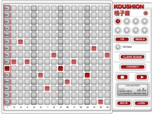
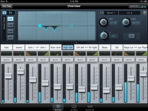
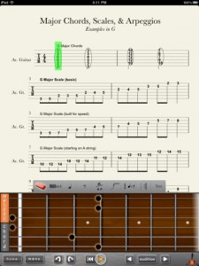
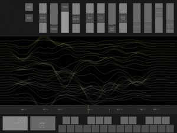
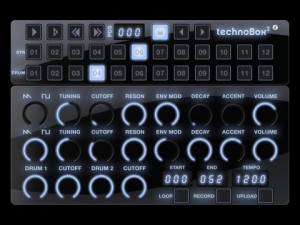
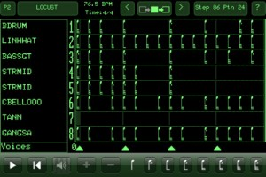
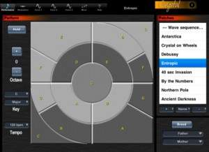
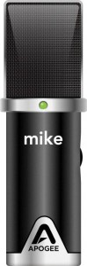
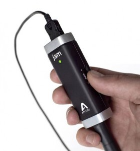

Koushion merges the best of the iPad technology and professional music production tools to create a world class product. It allows you to wirelessly control your music produciton software on your Mac or PC over a network. The tone matrix and variety of settings available in Koushion make it the perfect tool for creating your next track or performing live at your next gig.
Includes a 16-step sequencer with a 2-octave range.
Wirelessly controls MIDI software for both Mac and PC.
Syncs to any external MIDI clock source available to your computer so that the performance or production always stays synced.
Plays eight scenes/banks individually, chained in succession, or simultaneously.
Adjustable quantization.
Switches easily to any major or minor key with the push of a button.
Configurable scene/bank MIDI channel assignments to enable control of multiple instruments at the same time.
Here’s another of the growing number of remote app for those lucky enough to own one of the compatible mixers.
SL Remote™ for iPad® provides remote control of nearly all of the mixing functions of PreSonus StudioLive-series mixers. SL Remote connects wirelessly to Virtual StudioLive™ (VSL) for Mac® and Windows®, freeing the sound person to move around the venue while making adjustments to the mix and empowering musicians to take control of their own monitor mixes. SL Remote can connect to any StudioLive mixer over a wireless network. Conversely, up to 24 iPads running SL Remote can simultaneously control the same StudioLive mixer while retaining VSL and hardware control.
SL Remote requires a Mac or Windows PC running Universal Control v. 1.2 or later (which includes VSL) and a StudioLive-series mixer. The computer and mixer must be connected and synced via FireWire 400. VSL must be launched in order for SL Remote to detect a StudioLive mixer on the network.
Features:
•Level, Pan, and Mute control over all channels and subgroups
•Subgroup, Main, and FireWire-assign control for all channels
•Dynamics and EQ control for all channels, auxes, subgroups, and mains
•Aux and FX Mix Send control
•FX Type recall and parameter control
•GEQ control and bus insert assignment (24.4.2 only)
•GEQ Draw mode allows you to draw GEQ curve
•Portrait Zoom mode allows you to see and adjust every parameter for a channel or bus
•Offline demo mode
REQUIREMENTS:
Compatible with iPad only. Requires iOS 4.2.1 or later. Computer running Universal Control v1.2 connected and synced to a StudioLive series mixer via a FireWire 400 connection.
This is a great ‘free’ series that’s been available online for sometime, but now you can carry around in your pocket. The tips and advice range from common sense practises through to some of the golden rules of recording and microphone techniques, that even pros will get something from.
RØDE University, the critically acclaimed educational video course from RØDE Microphones, is now available on iPhone! Including both the musical instrument and broadcast recording segments, RØDE University features over 30 entertaining and educational videos that help you get the professional audio results you’ve been searching for. Filmed in the world renowned Studio 301 and featuring Sydney band “Hell City Glamours”, the musical instrument segment covers recording vocals, guitars, bass and drums with a range of different microphones and techniques. Veteran sound designer and best-selling author Ric Viers hosts the broadcast recording component, and covers a wide range of topics including location recording, foley, voiceover/ADR and sound effect recording. Also included is a graphical reference library of all RØDE Microphones including detailed specifications.
Progression, a guitar tab editor for your iPad gives you the convenience of an easy-to-use guitar tab creation tool right at your fingertips. An incredible app for any guitarist, this “Free” version of Progression gives you the ability to write, edit, and playback guitar tablature using real audio samples. You can capture your musical ideas anytime, and with the mobility of the iPad, you can take this helpful application anywhere!
With a user-friendly interface and simple interactive entry fretboard, Progression gives even the inexperienced guitarist an abundance of guitar functions, including but not limited to: vibrato, slides, string bending, hammer-ons, pull-offs, trills, whammy-bar methods and more.
In addition to the tab editor you also can hear your music performed with real audio samples, giving you the most realistic playback possible. Choose your tempo, the key, and share your work with anyone by simply sending a file that they can view, hear, and edit themselves. Or you can email them an image file that they can print anytime they want.
– Clean and intuitive user interface
– Interactive 24 fret guitar fretboard for fast entry
– Quick and simple selection palette
– Audio Samples
– Convenient file sharing
– Full-range of guitar functions and articulations including: bends, vibrato, slides, hammer on, pull offs, trills, whammy bar techniques and more….
– Insert text
– Quick “Undo” and “Redo” functions
– Chord and melody modes
– Easy delete capabilities
– The “Audition” feature allows you to quickly hear a single chord or note entered
– Enter and edit title and composer information
CP 1919 is the latest and most experimental audio app from The Strange Agency.
A physics-based fluid simulation drives an additive synthesizer, controlling a fat stack of up to 24 oscillators. The multitouch interface lets you control the fluid with your fingers, exciting the oscillators like strings on a liquid harp.
Various settings alter the fluid’s behavior as well as the resulting sound. Coax the fluid into a gentle motion, or crank the parameters for instant sonic madness.
Furthermore, a large ribbon controller lets you detune the oscillators, creating rich, sonorous harmonies or the thickest dissonant cacophony. Meanwhile two independent LFO’s allow automated control of both oscillator spread and aggregate pitch.
Play CP 1919 as a drone by strumming the fluid with one hand while tapping the ribbon with the other or use the on-screen keyboard to play it like a more traditional device. The HOLD control lets you leave the sound on or make it keyboard-activated. Hold down ZERO to force the fluid to subside, or turn up the DAMPEN slider to kill its momentum. As always, experiment!
technoBox2 is the next version of our hugely popular technoBox adding many asked for features such as dual 303s and drum machines, export recordings of songs and SoundCloud integration. A performance page has been added which allows access to the most commonly used controls on one page. The drum machines now allow you to load your own samples (via iTunes documents). technoBox2 runs on iPad and retina displays with crisp native resolution.
New Features include –
– Dual 303s and drum machines (2×303, 2×808/909)
– The 303 emulation is our latest engine which sports improved authenticity
– Improved song sequencing with Start/End and Loop markers
– Lock parameters song bars
– Export recorded songs (as .wav) via iTunes (documents)
– Upload recorded song to SoundCloud directly and share
– Load your own .wav and .aif samples (uncompressed 44.1kHz 16-bit) into the drum machines (via iTunes documents)
– Performance screen with the most accessed controls on one screen
– Completely redesigned FX Panel: You can now activate effects on any or all of the 4 machines
– Improved tempo synced phaser and distortion effects. Added a damp parameter to the delay.
– Filter cutoff added to the drum machines
– Per part decay added to the drum machines
– iPad native resolution support
– Retina display support
– Requires at least iPhone 3G S (but runs best on iPad/iPhone 4)
A legendary Australian company, created one of the pioneering electronic music instruments in the late 70s, the Fairlight, and today it has launched for iPad and iPhone. Don’t you just love technology!?
The CMI’s Page R was the world’s first screen-based rhythm sequencer. Today every sampler, digital synthesizer, sequencer and audio workstation can trace its lineage back to this legendary machine. Now you can have, in your pocket or on your iPad, a piece of history developed by Fairlight staff who worked on the CMI in the ’80s.
BIULT-IN FEATURES
– browse and play the entire original Fairlight CMI IIX Sounds floppy disk library – 32 disks containing 564 voices.
– display voices graphically using the iconic Page D, and change your viewpoint by tipping your iPhone/iPad.
– play built-in Fairlight CMI Page R compositions.
– import and play Page R compositions and instrument collections sent to you by others.
– authentic Fairlight CMI user interface experience, including floppy disk sounds.
– on-screen music keyboard.
UPGRADE to PRO VERSION
You can use the in-App upgrade process to add these features for an additional $39.99:
– gain access to the CMI III voices library.
– create instrument sets that store settings for all 8 channels, including the voices, pitch shifts, volumes, release times etc.
– use Page R to create songs that can be used with any instrument set.
– use the on-screen keyboard to record new notes while your composition is playing (minimum iPhone 3GS, iPod Touch 3G or iPad recommended).
– play back your masterpiece, essentially as it would sound on a real CMI!
– export MIDI files from Page R, with General MIDI instruments for each channel specified by you
– import MIDI files into Page R, with all the notes ready to be edited.
– use an external MIDI keyboard to play the CMI voices or record notes in Page R (see the support page for MIDI devices supported). The Line6 MidiMobilizer and Akai SynthStation are supported.
– import audio files to be used as voices in your instrument sets and compositions.
– send and receive songs and instrument sets by email.
Green Oak Software today announced an update to Crystal XT for the iPad/iPhone/iPod Touch, now available in the Apple App store. The most powerful synthesizer for the iPad/iPhone/iPod Touch just got better!
What’s New in Version 1.2
– New two octave keypad with selectable modes
– Patch designer on iPhone for creating patches
– Audio recording which may be copied to desktop
– Audio copy/paste to copy recordings to other apps
– Support for Line 6 MIDI Mobilizer to connect a MIDI keyboard to Crystal on an iPhone or iPad
– Patch breeding can now include up to 20 user patches
– High precision mode (drag vertically to get high precision after touching slider) for precise slider adjustments.
The second of two new products announced by Apogee Electronics this month is a compact studio quality USB microphone for iOS devices. Here’s the official release covering all the details –
Standing roughly as tall as an iPhone, Mike by Apogee is an extremely portable, easy-to-use and powerful microphone for use with GarageBand on your favorite iOS devices. Finally, you can capture your best take with incredible quality, wherever your music takes you. Record any sound you can imagine, from vocals to vibraphones, acoustic to lap steel guitars, pianos to percussion and everything in between, and build a track right on your iPad with GarageBand. With the unique flexibility to also plug Mike into your Mac, the possibilities of recording are endless.
Mike is also the perfect companion to JAM, Apogee’s studio quality guitar input. Never before has award-winning, Apogee-quality conversion been so affordable and accessible as it is on this truly inspiring new mobile platform. The professional studio is now literally at your fingertips.
“Since the success of the built-in microphone in ONE, we have been looking forward to creating a great sounding mic for the iPad,” says Betty Bennett, CEO and Co-founder of Apogee Electronics. “Now with Mike, GarageBand and an iPad, customers can record vocals and acoustic instruments with their iOS devices anytime, anywhere, and sound fantastic.” Mike by Apogee Highlights
PureDIGITAL technology delivers pristine sound quality
Designed to record vocals and acoustic musical instruments
Great for voice overs, interviews and podcast recordings
No configuration, just plug in and record
Easily adjust input levels without accessing software
Multicolor LED for status indication and input level monitoring
Made for GarageBand on iPad and Mac
Includes desktop stand and mic clip
Size: 4.5″ tall
Join the recording revolution with Mike, JAM and GarageBand on iPad.
The first of two new products announced by Apogee Electronics this month is a studio quality guitar interface for iOS devices. Here’s the official release covering all the details –
Featuring PureDIGITAL technology, JAM enables musicians to practice, record and rock out with ultimate tone using the guitar amps and effects in Apple’s GarageBand software on iPad 2 or Mac. No configuration necessary, just plug in and play and experience the legendary sound quality of Apogee for $99.
“We’re very excited to enter the rapidly growing world of iOS with this incredible product,” says Apogee Co-founder and CEO Betty Bennett. “JAM is the first high-quality interface that makes a digital connection to your iPad, iPhone, and iPod touch, and the only one that also works on your Mac. You will immediately notice the difference between the sound quality of JAM and other similar products because its converters are designed by the same team of engineers responsible for our award-winning, high-end professional interfaces. JAM promises to become a standard for guitarists who want a professional, portable way to connect to these devices and benefit from the amazing music-making apps they offer.”
Thanks for dropping by ProMusicApps. Whether you're a dedicated app developer, or devoted app users like us, we hope you find what you're after. Ping us via the Contact Page if you want to touch base.